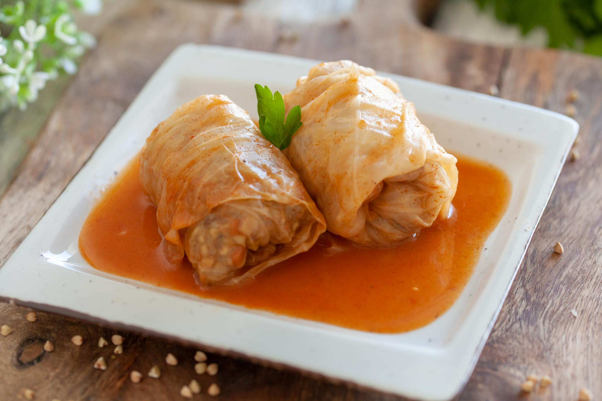

Potrebno je:
Skuvati pirinač.
Prodinstati luk, dodati mu mleveno meso i dinstati dok ne porumeni. Začiniti dodatkom za jelo, posoliti, pobiberiti. Dodati crvenu mlevenu papriku, skuvani pirinač, kašiku brašna i dobro sjediniti
Zelje oprati i istanjiti mu dršku, pa preliti vrelom vodom i ostaviti poklopljeno nekoliko minuta da lišće omekša. Na naličje lista staviti punu kašiku fila, preklopiti levu i desnu stranu lista preko fila ka sredini, pa umotati sarmicu. Nauljiti vatrostalnu činiju, redjati ih jednu do druge zajedno sa komadima paradajza. Zaliti vodom
Staviti da se peku na 200°C, pa posle sniziti temperaturu na 180°C, da se fino krčkaju u rerni. Dok se sarme peku, umutiti jaja i pavlaku, dodati malo dodatka za jelo. Kada je pola vode iz vatrostalne posude isparilo, dodati mešavinu jaja i pavlake i vratiti u rernu da se zapeče.
Servirati toplo u tanjir i preliti jogurtom, kiselim mlekom ili pavlakom.